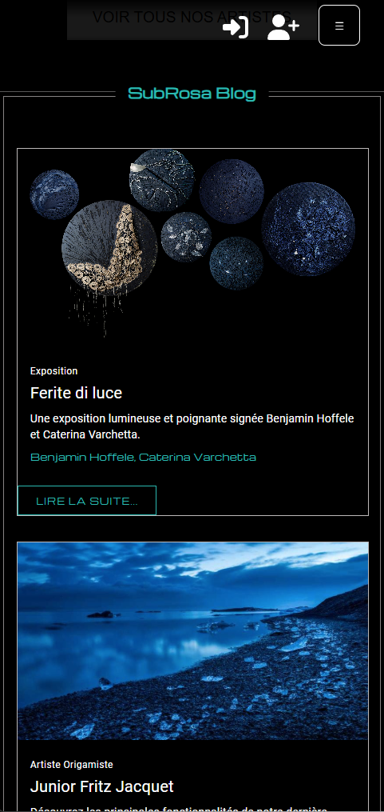
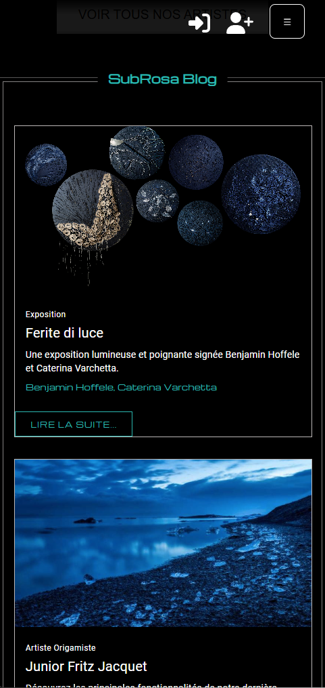
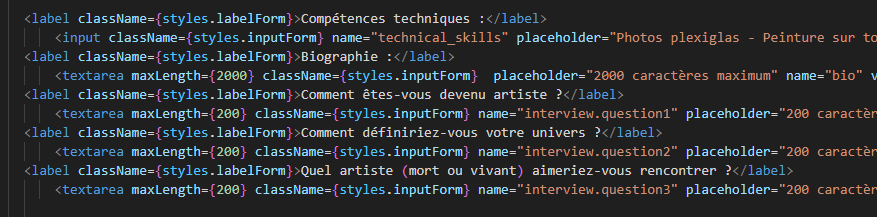
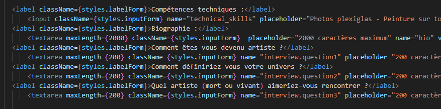

Présentation pour le titre DWWM
par
BENJAMIN HOFFELE

Projet de fin de formation DWWM
Objectif : Créer une galerie d'art en ligne
Technos : React, Next.js, Node.js, MongoDb
Mon parcours
La création
Mettre en valeurs les oeuvres
Sortir du lot
Mettre en relations les acteurs de l'art
Artistes, visiteurs, collectionneurs et entreprises
Créer les outils de la plateforme
Inscription, interface, espace securisé
Présenter mon regard sur l'art
Entretien post-validation
future editorial des univers artistiques
Donner l'envie d'acheter
70 heures de code / semaine
Projet complet seul
Concéption et design
Technos utilisées
Versionning
Docs techniques
Definir un MVP
Code clair et maintenable
Responsive
Me rapprocher au mieux d'une experience
Definir un MVP
Avais-je bien compris ?
Minimum, minimum, minimum !!!
MVP validé, je peux maintenant ?
Conflits CSS...
logique mal repartie...
Composant redondant...
Crash en tout genre...
comprehension du terme "dette technique"
restructuration du code
nettoyage du code mort
Réorganisation composants React en éléments réutilisables
migration vers des fichiers CSS modules
Un des moments les plus instructif !
Créations d'une galerie avec effet de hover
Création d’une page blog avec texte en markdown et galerie de photos.
Technos : React, Next.js(App Router), Blogdata et prochainement Bdd et interface d'ajout de contenu


 



Masquage des mots de passe
Validation des formulaires côté client
Suppression des informations sensibles dans le code : les console.log
Aucune données sensible dans localStorage, sessionStorage, cookies
 


METTRE LIEN SITE SECURITE !
IL RESTE DES FAILLES A TROUVER, CHERCHE !!!
Failles potentiellement corrigées A VENIR, DODO !
satisfactions
difficultés rencontrées
satisfactions
difficultés rencontrées